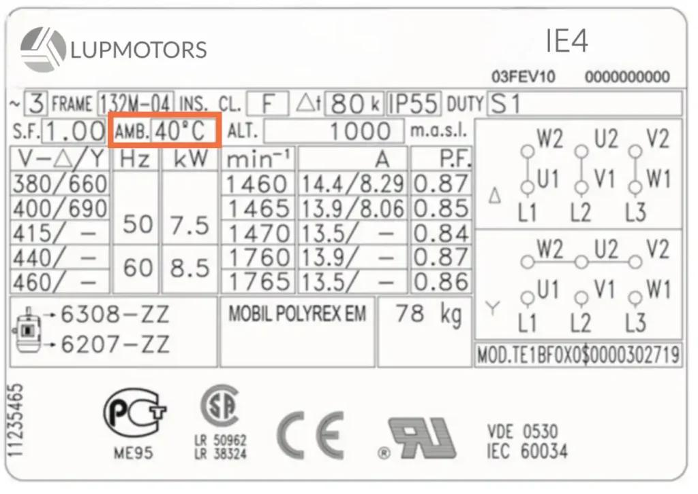
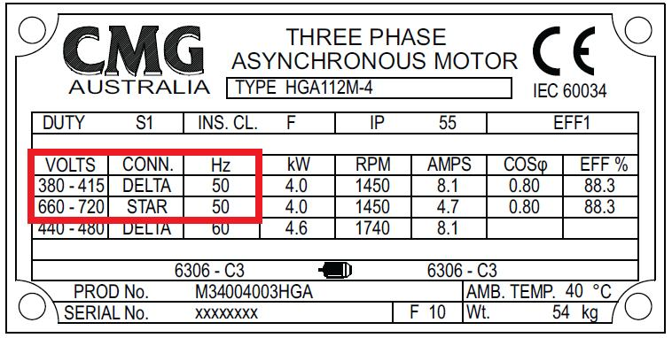
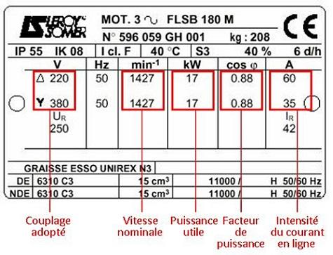

Study path: 02_PLAN_WISE_2026\02_INDUSTRY3_0\02_Auto_Tech\04_VFD\03_Motor_Params
1. What are motor parameters?
Motor parameters are the electrical and mechanical characteristics that describe how a motor is designed to operate.
For a VFD-controlled motor, these parameters help determine how the drive generates output voltage and frequency, estimates motor speed and torque, limits current, and protects the motor.
Typical motor parameters include:
- Rated power.
- Rated voltage.
- Rated current.
- Rated frequency.
- Rated speed.
- Power factor.
- Efficiency.
- Number of poles.
- Winding connection.
- Motor thermal characteristics.
The VFD uses the entered data according to its control method. Scalar control, commonly called V/f control, and vector-control methods do not use all motor parameters in exactly the same way.
Important distinction: Motor parameters describe the motor. VFD parameters describe the drive configuration, operating commands, limits, and control behaviour. The drive's motor-data settings are where the two meet.
2. How motor parameters fit into the automation system
Consider a VFD-controlled conveyor motor in an automotive production line.
PLC / HMI
|
| Speed reference and run command
v
+----------------------+
| VFD |
| |
| Motor Data |
| Control Method |
| Current / Speed Limit|
| Protection Settings |
+----------------------+
|
| Variable voltage and frequency
v
+----------------------+
| Induction Motor |
| |
| Torque and Speed |
+----------------------+
|
v
Conveyor / Gearbox / Load
The PLC may command the conveyor to run at a particular speed, but the VFD still needs the correct motor data to control the motor appropriately.
Incorrect motor data can cause:
- Incorrect speed estimation.
- Poor low-speed torque.
- Excessive current.
- Unstable vector control.
- Incorrect overload protection settings.
- Failed motor identification or autotuning.
- Unexpected acceleration or deceleration behaviour.
A drive can sometimes run a motor with incomplete or inaccurate data, particularly in basic V/f mode. That does not mean the configuration is correct.
3. Essential motor nameplate parameters
The motor nameplate is the primary source for rated motor data. Record the complete nameplate before configuring the drive.



9
A typical three-phase induction motor nameplate may contain the following information.
| Parameter | Example | Meaning |
|---|---|---|
| Rated power | 7.5 kW | Rated mechanical output power |
| Rated voltage | 400 V Δ / 690 V Y | Permitted rated voltage for the specified winding connections |
| Rated current | 15.2 A / 8.8 A | Rated line current for the corresponding connection and voltage |
| Rated frequency | 50 Hz | Frequency associated with the stated rated operating data |
| Rated speed | 1465 rpm | Rated shaft speed under the specified operating conditions |
| Power factor | 0.82 | Ratio of real power to apparent power at the stated operating point |
| Efficiency | 89.5% | Ratio of mechanical output power to electrical input power |
| Insulation class | F | Thermal classification of the winding insulation system |
| Duty | S1 | Continuous-duty rating, if specified |
| Protection rating | IP55 | Enclosure protection against ingress, according to the IP classification |
| Connection | Δ / Y | Delta or star winding connection |
| Serial/model data | Manufacturer-specific | Used to identify the motor and retrieve technical documentation |
These values are illustrative. Actual nameplates vary by manufacturer, motor design, and rating.
4. Rated motor power
Rated motor power is normally the rated mechanical output power available at the motor shaft.
It is commonly expressed in kW or horsepower.
For example:
- Motor rated output: 7.5 kW.
- Mechanical load demand: 5 kW.
- Motor output at that operating point: approximately 5 kW, assuming the motor and control system can deliver the required torque and speed.
The motor's rated power is not the same as its electrical input power. The electrical input must also cover motor losses.
The relationship is:
Therefore:
Where:
- \(P\_{\text{out}}\) = mechanical output power.
- \(P\_{\text{in}}\) = electrical input power.
- \(\eta\) = motor efficiency as a decimal.
For a 7.5 kW motor operating at 89.5% efficiency at its rated point:
This is an approximate rated-point calculation. Actual electrical input varies with load and operating conditions.
VFD configuration rule: Enter the motor's rated power using the units and definition required by the drive. Do not enter the conveyor's total mechanical load power as though it were the motor nameplate rating.
5. Rated motor voltage
Rated voltage is the voltage associated with the motor's specified rated operating conditions and winding connection.
For example, a motor marked:
400 V Δ / 690 V Y, 50 Hz
is designed for the specified rated voltage with the corresponding winding connection.
- At 400 V using delta connection, each winding receives approximately 400 V.
- At 690 V using star connection, each winding receives approximately \(690/\sqrt{3}\), or 398 V.
This allows the winding voltage to remain approximately the same.
Why this matters when using a VFD
The VFD must be configured according to the motor's actual voltage rating and connection, along with the drive's output-voltage capability.
Do not assume that the drive's incoming supply voltage automatically determines the correct motor-voltage entry.
For example, a 400 V-class VFD supplying a motor connected for 400 V delta operation is different from a 400 V-class VFD supplying a motor configured for a different rated winding voltage.
An incorrect voltage setting can affect flux, torque capability, current, and motor heating.
6. Rated motor current
Rated current is one of the most important motor parameters for drive commissioning.
It is the motor's rated line current under the stated voltage, frequency, connection, and operating conditions.
For example, a nameplate might show:
400 V Δ / 690 V Y
15.2 A / 8.8 A
The current values correspond to the stated voltage and connection arrangements. Use the correct value for the motor's actual connection and rated supply conditions.
Why the VFD needs rated current
The drive may use rated motor current for:
- Motor thermal protection calculations.
- Current limits and torque estimation.
- Vector-control calculations.
- Motor identification or autotuning.
- Overload detection.
The precise use depends on the drive and control mode.
Common mistake
Entering a larger current merely because the VFD can deliver it is not a valid way to configure the motor.
The VFD's output-current rating and the motor's rated current are separate specifications.
For a correctly selected motor and drive, the motor-data setting should match the applicable motor nameplate value. Protection settings must then be configured according to the motor, drive, load, and manufacturer's instructions.
7. Rated frequency
Rated frequency is the frequency associated with the motor's stated rated operating point.
In India, industrial induction motors commonly have a rated frequency of 50 Hz, although the actual motor nameplate must be checked.
The frequency affects motor speed and, under V/f control, is associated with the output-voltage profile.
For a typical induction motor:
- Below rated frequency, the VFD generally maintains approximately constant voltage-to-frequency ratio within the configured operating region.
- Above rated frequency, the motor may enter a field-weakening region if the drive permits it, with reduced available torque under typical operating conditions.
The rated frequency is not necessarily the same as the maximum frequency allowed by the drive configuration.
Example
A motor rated for 400 V at 50 Hz has a nominal voltage-to-frequency ratio of:
A simplified V/f profile would aim to maintain a similar ratio below base frequency, subject to low-speed voltage compensation and the drive's control algorithm.
This is not a universal instruction to program a fixed 8 V/Hz curve. The manufacturer's control settings and motor data determine the actual implementation.
8. Rated speed and slip
An induction motor's rated shaft speed is normally lower than its synchronous speed at the rated frequency because the rotor must run with slip to produce torque.
Synchronous speed is calculated as:
Where:
- \(N_s\) = synchronous speed in rpm.
- \(f\) = supply frequency in Hz.
- \(P\) = number of magnetic poles.
For a four-pole induction motor operating at 50 Hz:
Suppose the motor nameplate gives a rated speed of 1465 rpm.
The rated slip speed is:
The slip percentage is:
Where \(N_r\) is rated rotor speed.
Why does the VFD need rated speed?
Rated speed helps certain control algorithms estimate motor characteristics and slip.
It is particularly relevant to vector-control implementations and motor identification.
Do not confuse:
- Synchronous speed: Speed of the rotating magnetic field.
- Rated motor speed: Shaft speed at the stated rated operating point.
- Commanded speed: Speed requested by the control system.
- Actual operating speed: Speed achieved under the current load and operating conditions.
A VFD's displayed speed may be estimated rather than directly measured if no encoder is installed.
9. Power factor
Power factor is the ratio of real electrical power to apparent electrical power.
For a balanced three-phase system:
Where:
- \(P\) = real electrical input power.
- \(V_L\) = line-to-line RMS voltage.
- \(I_L\) = line RMS current.
- \(\cos\phi\) = displacement power factor in the simplified sinusoidal model.
For a motor nameplate, the listed power factor normally relates to the motor's rated operating point.
A value of 0.82 means the power factor is 0.82 under the stated conditions.
Why it matters
Power factor helps describe the motor's electrical behaviour and may be used by some VFD control algorithms.
However, the power factor printed on a motor nameplate should not be confused with the total power factor of the complete VFD input system. A VFD's rectifier and input-filter design affect the supply-side power characteristics.
Do not use the motor's nameplate power factor as a substitute for measuring or analysing the drive's input power factor.
10. Motor efficiency
Efficiency is the ratio of mechanical output power to electrical input power.
If a motor produces 7.5 kW mechanically while drawing 8.38 kW electrically:
The difference represents motor losses, including winding, magnetic, mechanical, and other losses.
Efficiency is useful for energy analysis and may be a required data entry for some drive functions, but not every VFD requires it for ordinary operation.
Motor efficiency changes with load, speed, temperature, and operating conditions. The nameplate efficiency is not a guarantee that the motor operates at that efficiency at every speed.
11. Number of poles
The number of poles determines the synchronous speed at a given electrical frequency.
| Number of poles | Synchronous speed at 50 Hz |
|---|---|
| 2 | 3000 rpm |
| 4 | 1500 rpm |
| 6 | 1000 rpm |
| 8 | 750 rpm |
The actual shaft speed of an induction motor under load is generally somewhat lower than synchronous speed.
Practical use
If a motor nameplate states approximately 1465 rpm at 50 Hz, a four-pole induction motor is a likely interpretation.
If the VFD configuration or motor-identification process requires the pole count, it should be confirmed from the motor data or manufacturer documentation rather than guessed from appearance.
A gearbox also changes the final machine speed, so motor shaft speed and conveyor speed are not interchangeable.
12. Star and delta connections
Three-phase motors may support different winding connections depending on the motor design and supply voltage.
Star connection
In a star connection, one end of each winding joins at a common point.
The relationship is:
For a 400 V line supply, the phase voltage is approximately 231 V.
Delta connection
In a delta connection, the windings form a closed loop.
The relationship is:
For a 400 V line supply, each winding receives approximately 400 V.
Important VFD consideration
The motor's terminal connection must match the intended drive output voltage and the nameplate rating.
A motor marked 230/400 V Δ/Y, for example, has different winding-connection requirements from a motor marked 400/690 V Δ/Y.
Never change star/delta links based only on the voltage printed on the VFD. Check the full motor nameplate, motor terminal diagram, and intended supply arrangement.
13. Insulation class, duty, and enclosure rating
These are not always required as direct motor-data entries in a VFD, but they matter when evaluating the motor's suitability.
13.1 Insulation class
The insulation class describes the thermal classification of the motor winding insulation system.
Common designations include Class B, F, and H.
It is not simply a maximum allowable ambient temperature for every motor. Permitted winding temperature and temperature rise depend on the applicable standard, insulation system, design, and operating conditions.
VFD operation can introduce additional thermal considerations, particularly at low shaft speed when a shaft-mounted cooling fan may deliver less airflow.
13.2 Duty rating
Duty describes the motor's intended operating cycle.
Examples include:
- S1: Continuous duty under the specified conditions.
- S2: Short-time duty.
- S3: Intermittent periodic duty.
Other duty classes cover more complex operating cycles.
A conveyor motor that runs continuously differs thermally from an actuator that starts, stops, and rests repeatedly.
The drive's overload settings and the motor's thermal capability must suit the actual duty.
13.3 IP rating
An IP rating classifies protection against access, solid objects, and water ingress according to the relevant IP code.
For example, IP55 indicates specified protection against dust ingress and water jets under the applicable test conditions. It does not mean the enclosure is completely dust-tight or suitable for every washdown or chemical environment.
In an automotive plant, contamination, coolant, oil mist, metal dust, and cleaning practices can influence motor selection and maintenance requirements.
14. Other motor parameters used by advanced control methods
Some VFDs use additional motor data, particularly for sensorless vector control, closed-loop vector control, or motor identification.
These may include:
- Stator resistance.
- Rotor resistance or rotor time constant.
- Stator and rotor inductance.
- Magnetizing current.
- Rated slip or calculated slip.
- Motor inertia.
- Encoder pulses per revolution.
- Motor temperature or thermal-model data.
These values are drive- and control-method-dependent.
They may be calculated by the drive during an approved motor-identification or autotuning procedure, or entered from manufacturer data when supported.
Do not invent values for parameters that are not provided on the nameplate. Use the correct drive procedure and manufacturer's documentation.
Static versus rotating autotuning
- Static identification: Performs measurements without intentionally rotating the motor, though the drive may still energize the motor. The motor must be in the condition specified by the manual.
- Rotating identification: Runs the motor through a prescribed test sequence and may require the motor to be mechanically uncoupled from the load.
The available methods and precautions vary by drive. A coupled conveyor, gearbox, brake, or robot peripheral may make rotating identification unsafe or unsuitable unless the manufacturer explicitly permits the procedure for that arrangement.
Follow the approved isolation and machine-safety process before performing any identification procedure.
15. What happens when motor data is incorrect?
| Incorrect parameter | Possible effect | Diagnostic priority |
|---|---|---|
| Rated voltage | Incorrect flux or voltage profile | Verify nameplate and motor connection |
| Rated current | Incorrect thermal model, current limits, or control calculations | Verify rated line current for the actual connection |
| Rated frequency | Incorrect base-frequency relationship | Verify nameplate frequency |
| Rated speed | Incorrect slip estimation in applicable control modes | Verify rated shaft speed |
| Rated power | Incorrect scaling or control calculations in some drives | Verify the nameplate rating and drive's data definition |
| Power factor | Reduced accuracy of some model calculations | Verify if required by the selected control mode |
| Pole count | Incorrect synchronous-speed interpretation where used | Verify motor design data |
| Encoder data | Incorrect feedback scaling or speed measurement | Verify encoder resolution and configuration |
| Motor thermal data | Incorrect overload protection behaviour | Verify motor and drive thermal settings |
Not every incorrect parameter causes an immediate trip. Some errors cause subtle performance problems that appear only under load, at low speed, or during acceleration.
16. Motor parameters in V/f versus vector control
| Feature | V/f control | Vector control |
|---|---|---|
| Basic principle | Controls voltage in relation to output frequency | Controls motor flux and torque through a motor model |
| Motor-data dependence | Basic operation can use relatively limited motor data | Usually relies more heavily on accurate motor data |
| Low-speed torque | May be limited without suitable compensation | Often provides better torque control when configured correctly |
| Slip estimation | May be less sophisticated, depending on drive | Important in many sensorless vector implementations |
| Autotuning | May not be required for basic applications | Often recommended or required for specified performance |
| Typical application | Fans, pumps, and less demanding speed-control tasks | Conveyors, demanding acceleration, and applications requiring better torque or speed control |
These are general tendencies, not absolute rules. Some V/f drives offer additional compensation and sophisticated functions, while vector-control implementations differ between manufacturers.
17. Practical commissioning example
A conveyor motor has the following illustrative nameplate:
| Parameter | Nameplate value |
|---|---|
| Power | 7.5 kW |
| Voltage | 400 V Δ / 690 V Y |
| Current | 15.2 A / 8.8 A |
| Frequency | 50 Hz |
| Speed | 1465 rpm |
| Power factor | 0.82 |
| Efficiency | 89.5% |
Assume the intended arrangement is a 400 V-class VFD supplying this motor at its rated voltage with the motor connected in delta.
The commissioning process should include:
- Verify the VFD can supply the required motor voltage, current, and power for the application.
- Confirm the motor terminal links are configured for the intended 400 V delta connection.
- Enter the rated power, voltage, current, frequency, and speed as required by the drive.
- Enter power factor and efficiency if the drive's specified setup requires them.
- Select the intended motor-control method.
- Complete motor identification or autotuning if required and safe for the installation.
- Verify current, speed, acceleration, deceleration, and load response.
- Check thermal protection, motor cooling, and fault history.
- Record the final parameters and compare them with the motor nameplate and drive manual.
The values in this example are not a universal setup template. The actual drive's parameter definitions and motor's nameplate determine the entries.
18. Interview questions and answers
Q1. What are motor parameters?
They are the electrical and mechanical characteristics used to describe a motor and configure the drive's control and protection functions.
Q2. Why is rated motor current important?
It may be used for current limits, overload protection, torque estimation, and motor-control calculations.
Q3. What is the difference between rated speed and synchronous speed?
Synchronous speed is the speed of the rotating magnetic field. Rated speed is the motor shaft speed under its specified rated operating conditions and is normally lower for an induction motor because of slip.
Q4. Why does a VFD need rated motor voltage and frequency?
These define the motor's rated operating point and help establish the appropriate voltage-frequency relationship and control limits.
Q5. Why can incorrect motor data cause poor low-speed torque?
The drive may estimate motor flux, slip, and torque incorrectly, particularly when using control methods that depend on an accurate motor model.
Q6. Is VFD output current rating the same as motor rated current?
No. The VFD and motor have separate ratings. Motor data should match the applicable motor nameplate values, while the VFD must be appropriately rated for the application.
Q7. What is power factor?
It is the ratio of real power to apparent power. The motor's nameplate power factor normally applies to its stated operating point.
Q8. What is motor efficiency?
It is mechanical output power divided by electrical input power, expressed as a percentage.
Q9. Why is motor autotuning performed?
It helps the drive identify motor characteristics needed by certain control algorithms. The procedure depends on the drive and may be static or rotating.
Q10. Can a motor run with incorrect parameters?
Sometimes, especially in basic V/f control. However, it may run inefficiently, produce poor torque, heat excessively, or trigger protection under certain conditions.
Q11. Why does a motor run slower than synchronous speed?
An induction motor requires slip to develop torque. Under normal motoring operation, the rotor speed is therefore lower than synchronous speed.
Q12. Does a 7.5 kW motor always consume 7.5 kW electrically?
No. The rated kW usually represents mechanical shaft output. Electrical input is higher at the rated point because of motor losses, and actual input changes with load.
19. Practical exercises
Exercise 1: Read a motor nameplate
Select an actual motor from an available machine and record:
- Manufacturer and model.
- Rated power.
- Rated voltage and connection.
- Rated current.
- Rated frequency.
- Rated speed.
- Power factor.
- Efficiency.
- Duty rating.
- IP rating.
Separate the values printed on the nameplate from the parameters required by the particular VFD.
Exercise 2: Calculate synchronous speed and slip
For a four-pole induction motor at 50 Hz with a rated shaft speed of 1465 rpm, calculate:
- Synchronous speed.
- Slip speed.
- Slip percentage.
Expected results:
- Synchronous speed: 1500 rpm.
- Slip speed: 35 rpm.
- Slip percentage: approximately 2.33%.
Exercise 3: Compare two motor nameplates
Compare a 230/400 V Δ/Y motor with a 400/690 V Δ/Y motor.
Explain which connection is appropriate for each motor when supplied by a 400 V-class drive, assuming the drive's output and the motor's intended operating point support the selected arrangement.
Exercise 4: Investigate poor torque
A conveyor motor produces insufficient torque at low speed after a VFD replacement.
Prepare a diagnostic checklist covering:
- Motor nameplate entries.
- Motor terminal connection.
- Control mode.
- Motor identification or autotuning status.
- Current and torque limits.
- Load and mechanical condition.
- Drive fault history.
Do not assume the problem is caused by motor data until the evidence supports that conclusion.
20. Final mental model
Motor parameters provide the drive with the information needed to control and protect the motor appropriately.
Motor Nameplate
|
v
Verify Voltage / Current / Power /
Frequency / Speed / Connection
|
v
Enter Required Data in VFD
|
v
Select Control Method
|
v
Identify Motor if Required
|
v
Test Under Actual Load
|
v
Verify Speed / Torque / Current /
Temperature / Fault Behaviour
The core principle is simple: use the motor's actual rated data, configure the drive according to its manual, and verify performance under real operating conditions. A drive that merely runs the motor has not necessarily been commissioned correctly.
Next topic in sequence
02_PLAN_WISE_2026\02_INDUSTRY3_0\02_Auto_Tech\04_VFD\04_Parameterization\01_Motor_Data
01_Motor_Data - Motor data: Nameplate values in the drive
The next topic will focus specifically on entering and verifying motor nameplate values in a VFD, including parameter mapping, connection-dependent voltage and current selection, common configuration errors, and commissioning checks.